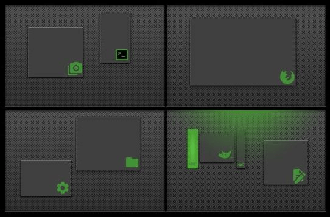
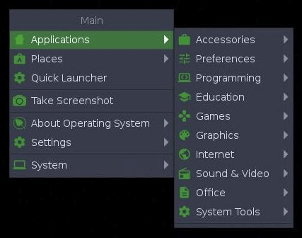
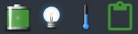
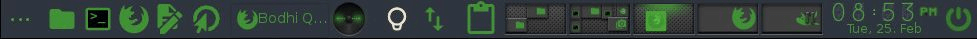
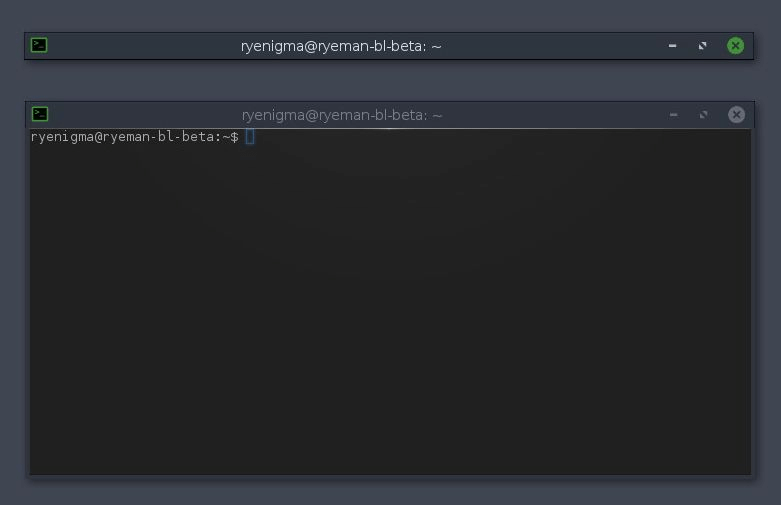

Организуйте рабочее пространство с помощью виртуальных рабочих столов.
Виртуальные рабочие столы позволяют группировать программы по решаемым задачам. Изначально доступны четыре виртуальных рабочих стола, но их количество можно изменять.
Гаджет Пейджер на полке отображает миниатюры виртуальных рабочих столов с выполняющимися на них программами.
Есть несколько способов переключения между виртуальными рабочими столами:
- с помощью гаджета Пейджер, просто нажмите на изображение рабочего стола, который на который вы хотите перейти.
- с помощью сочетаний клавиш: Ctrl+Alt + <Стрелка> в направлении переключения.
- с помощью сочетаний клавиш: Alt + Fd, где d — номер рабочего стола.

Весь рабочий стол — это Меню
Щелчок на любом свободном пространстве рабочего стола приводит к вызову Главного меню, из которого можно запускать программы, изменять настройки, выключать систему, и т. п. Это — стандартное поведение свежеустановленной системы Bodhi. Большинство находит это удобным. Те же, кому это не нравится, могут удалить или изменить настройку привязки действия мыши "Показать главное меню" в: Главное меню → Настройки → Панель параметров → Ввод → Привязки мыши. Там же настраиваются другие привязки действий мыши.
Щелчок правой кнопкой мыши на свободном пространстве рабочего стола вызывает меню Избранное. Для добавления программ в это меню, используйте Главное меню → Настройки → Панель параметров → Приложения → Избранные приложения.

Гаджеты отображают информацию о системе
Гаджеты (значки на горизонтальной панели — полке) выполняют множество функций. Одни отображают информацию о системе, например, заряд аккумулятора, время, использование процессора. Другие позволяют взаимодействовать с системой тем или иным способом, например, регулировать громкость или яркость экрана. Большинство допускают размещение нескольких экземпляров (значков) в разных местах, например, и на полке, и на рабочем столе.
Найти гаджеты и добавить их на рабочий стол можно через:
Главное меню → Настройки → Гаджеты

Наличие гаджетов зависит от модулей
Гаджет будет доступен только в том случае, если загружен его модуль. Другими словами, гаджет — это экземпляр модуля. Для загрузки/выгрузки модулей воспользуйтесь пунктом Главное меню → Настройки → Модули.
Bodhi поставляется с широким набором предустановленных модулей, остальные могут быть установлены по мере надобности из Центра приложений Bodhi и с помощью менеджера пакетов Synaptic.
Полки - площадки для Панели задач/Области оповещений/Гаджетов
Moksha предоставляет полки для размещения гаджетов и значков приложений. Это — удобная альтернатива размещению их на рабочем столе. Большинство гаджетов могут быть добавлены на полки. Полки могут быть расположены у любого края рабочего стола. Можно создать несколько полок на одном рабочем столе, а можно настроить разные полки на разных виртуальных рабочих столах.
Управление как количеством полок, так и их расположением, размерами и другими параметрами осуществляется через
Главное меню → Настройки → Полки. Для управления содержимым полки (то есть её гаджетами), щёлкните правой кнопкой мыши на полке и выберите
shelf → Содержимое.


Сворачивание - альтернатива минимизации
Хотите убрать окно с глаз долой, но не хотите минимизировать его на панель задач? Тогда сверните его! Просто выполните двойной щелчок по его заголовку, чтобы оно "свернулось вверх", а потом снова выполните двойной щелчок, чтобы оно снова "развернулось вниз".
На представленном снимке экрана показаны два экземпляра Terminology, один из которых свёрнут, а другой — нет. Terminology — это предустановленный терминал в Bodhi.
Некоторые полезные воздействия:
Воздействиями являются Привязки в Moksha, которые могут быть активированы, например, щелчком на границе экрана, нажатием сочетания клавиш или совмещением нажатия клавиши с щелчком мыши. Они классифицируются следующим образом:
- Edge Bindings (границы экрана)
- Key Bindings (сочетания клавиш)
- Mouse Bindings (мышь и клавиатура)
- ACPI Bindings (системные события)
Вы можете назначать свои собственные привязки, но многие уже настроены по умолчанию. В их числе:
Alt+<Левая кнопка мыши>
позволяет ухватить окно программы в любой его части для перемещения
<Левая кнопка мыши>
на свободном пространстве рабочего стола — открывает Главное меню
<Правая кнопка мыши>
на свободном пространстве рабочего стола — открывает меню Избранное
Ctrl+Alt+X
закрывает окно
Ctrl+Alt+<Стрелка>
переключает на виртуальный рабочий стол в указанном направлении
Ctrl+Alt+M
вызывает Главное меню
Shift+F10
растягивает окно по вертикали
Alt+Shift+F10
растягивает окно по горизонтали
Alt+Tab
переключает окна на рабочем столе
Все привязки можно найти и настроить тут:
Главное меню → Настройки → Панель параметров → Ввод → Привязки клавиш
Дополнительную информацию и список всех преднастроенных привязок ищите в документации Wiki.


{kind=link}
{kind=link}
{kind=link}
{kind=link}
{kind=link}